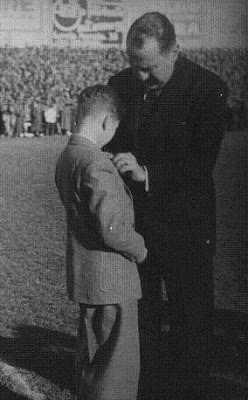
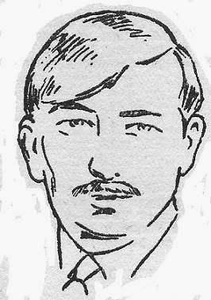
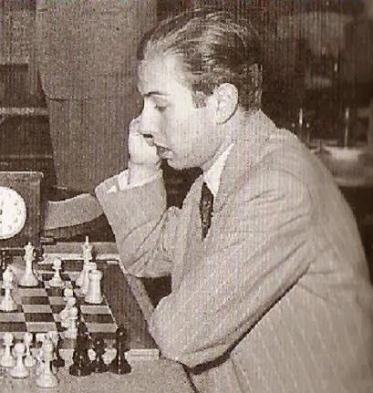
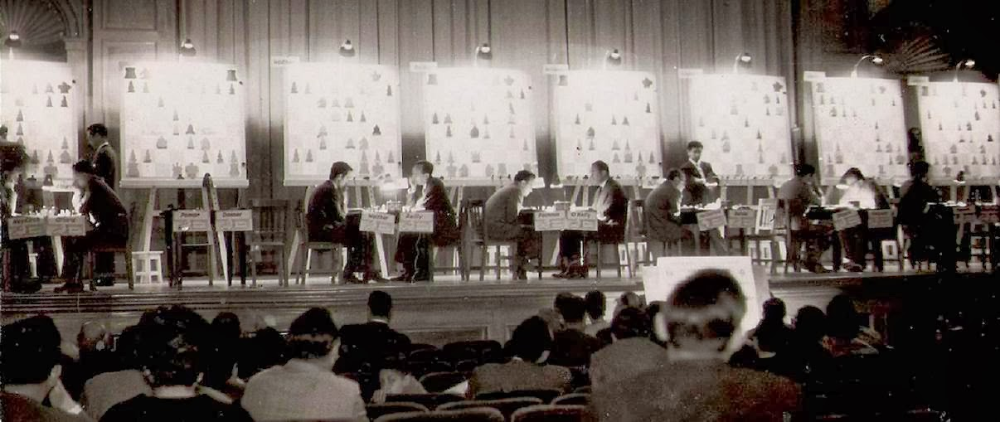
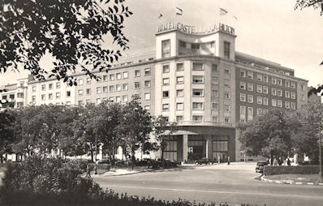
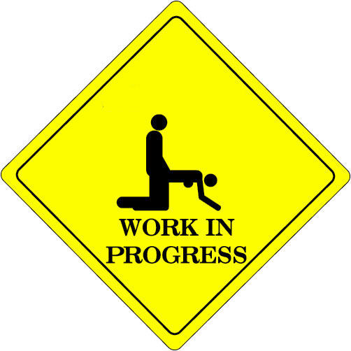

| Jan van Reek |
Pgn chess tournaments in Madrid
International chess tournaments in Madrid were
inspired by the great talent of the child prodigy Arturo Pomar
Salamanc. He
participated in Madrid 1943 as a 12-years-old. Keres won, but Pomar
did well at the end. Prins started by a score of 10/10 and triumphed in 1951.
Pomar was less successful.
 |
 |  |  |
|
Pomar Salamanca -
Fuentes in 1943 Probably, his mother accompanied the boy |
Santiago Barnabeu decorates Pomar at Real Madrid in 1949 | Lodewijk Prins | Arturo Pomar Salamanca in 1951 |
The real successes of Pomar Salamanca began at
the end of the fifties. He qualified for the interzonal in Madrid
1960. The event ended tragically for Jan Hein Donner. The Gran Torneo of 1973 did not happen in Palma
de Mallarco but in Madrid's Castellana Hilton. Three Soviet players dominated the event. Pomar
Salamanca neared the end of his career.
|  |  |
| Madrid 1960 | Castellana Hilton, playing hall in 1973 |
Winners in Madrid
|
1943 Keres 1951 Prins 1957 Darga 1959 Pomar Salamanca and Perez Perez 1960 Zonal: Pomar Salamanca, Portisch, Gligoric and Donner 1960 Playoff: Donner failed 1973 Karpov |
